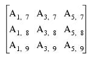

Subscript arrays can be combined with subscript ranges, simple scalar subscripts, and other subscript arrays.
When IDL encounters a multidimensional subscript expression that contains one or more subscript arrays, ranges, or scalars, it builds a subscript array by processing each element in the subscript expression from left to right. The resulting subscript array is then applied to the variable to be subscripted. As with other subscript operations, trailing degenerate dimensions (those with a size of 1) are eliminated.
When combining a subscript array with a subscript range, the result is an array of subscripts constructed by combining each element of the subscript array with each member of the subscript range. Combining an n-element array with an m-element subscript range yields an nm-element subscript. Each dimension of the result is equal to the number of elements in the corresponding subscript array or range.
For example, the expression A[[1, 3, 5], 7:9] is a nine-element, 3 x 3 array composed of the following elements:

Each element of the three-element subscript array [1, 3, 5] is combined with each element of the three-element range (7, 8, 9).
Another example shows the common process of zeroing the edge elements of a two-dimensional n∞m array:
; Zero the first and last rows.
A[*, [0, M-1]] = 0
; Zero the first and last columns.
A[[0, N - 1], *] = 0
When combining two subscript arrays, each element of the first subscript array is combined with the corresponding element of the second subscript array. The two subscript arrays must have the same number of elements. The resulting subscript array has the same number of elements as its constituents. For example, the expression A[[1, 3], [5, 9]] yields the elements A[1,5] and A[3,9].
Combining an n-element subscript range or n-element subscript array with a scalar yields an n-element result. The value of the scalar is combined with each element of the range or array. For example, the expression A[[1, 3, 5], 8] yields the three-element vector composed of the elements A[1,8], A[3,8], and A[5,8]. The second dimension of the result is 1 and is eliminated because it is degenerate. The expression A[8, [1, 3, 5]] is the 1 ∞ 3-column vector A[8,1], A[8,3], and A[8,5], illustrating that leading dimensions are not eliminated.